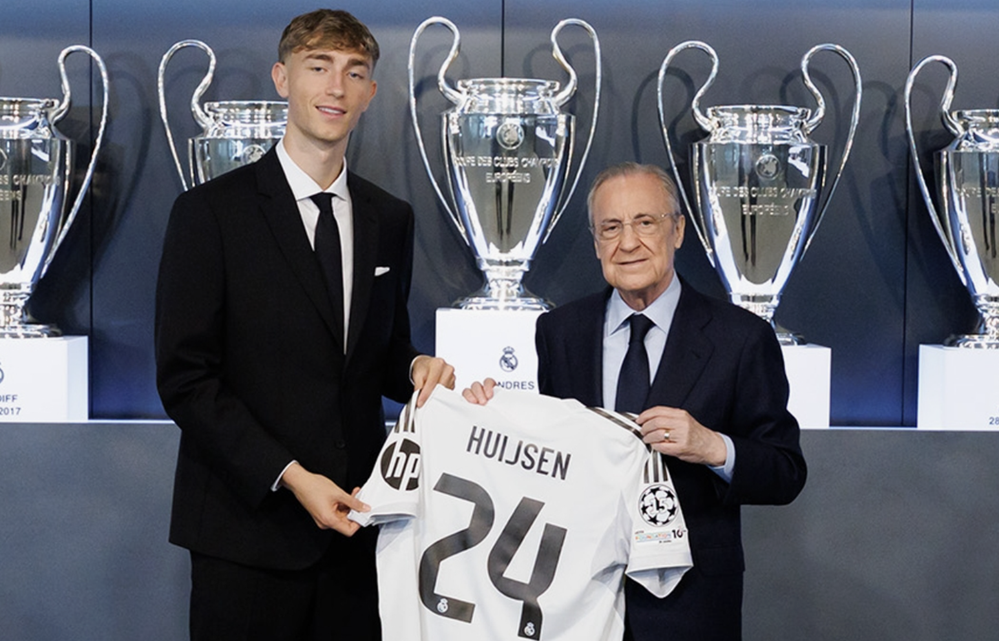

Первое интервью Дина Хёйсена в качестве футболиста "Реал Мадрид"
"Это лучший день в моей жизни. Мечта стала реальностью. Я взял 24-й номер, потому что он был свободен. Для меня счастье носить любой номер в этом клубе. Я здесь, чтобы выигрывать титулы. Я хочу выиграть всё. У меня есть амбиции. Несколько игроков «Мадрида» уже написали мне, это хорошая команда с отличными людьми. Не могу дождаться встречи с ними.
Серхио Рамос? Он написал мне, когда мой трансфер был официально объявлен. Он мой главный кумир, самый лучший центральный защитник из всех. Серхио Рамос забил в финале Лиги Чемпионов «Атлетико» когда мне было 9 лет, Десима — мое первое воспоминание.
Моуринью и работа с ним в «Роме»? Он позвонил мне, я ему навечно благодарен. Он один из лучших тренеров в истории футбола. Что я могу улучшить в своей игре? Всё. Я стараюсь совершенствоваться каждый день".